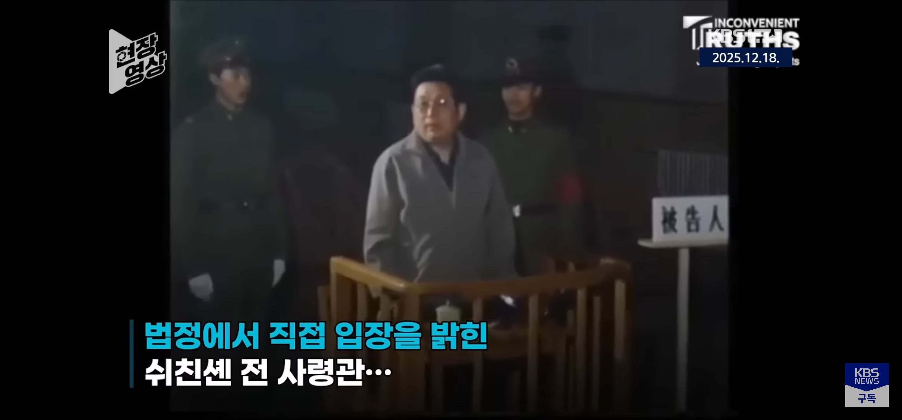
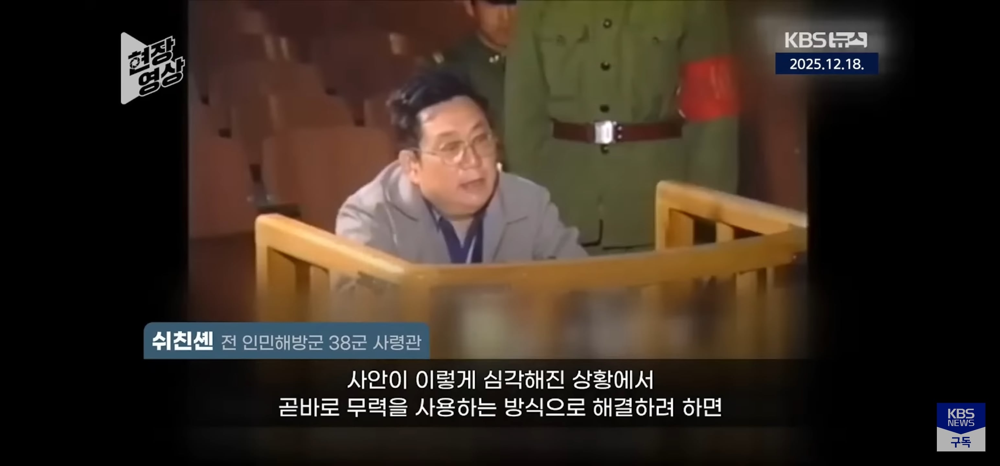
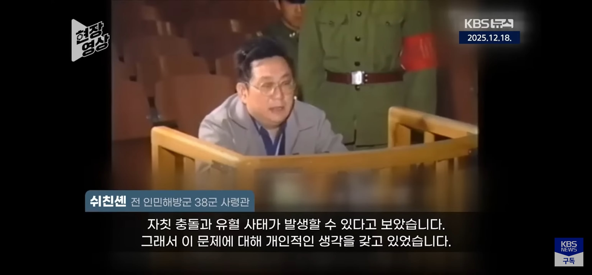
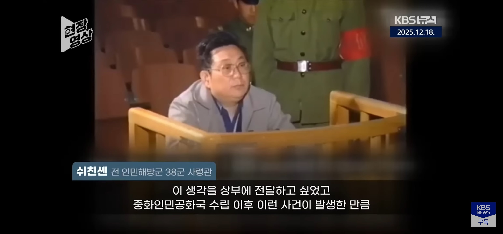
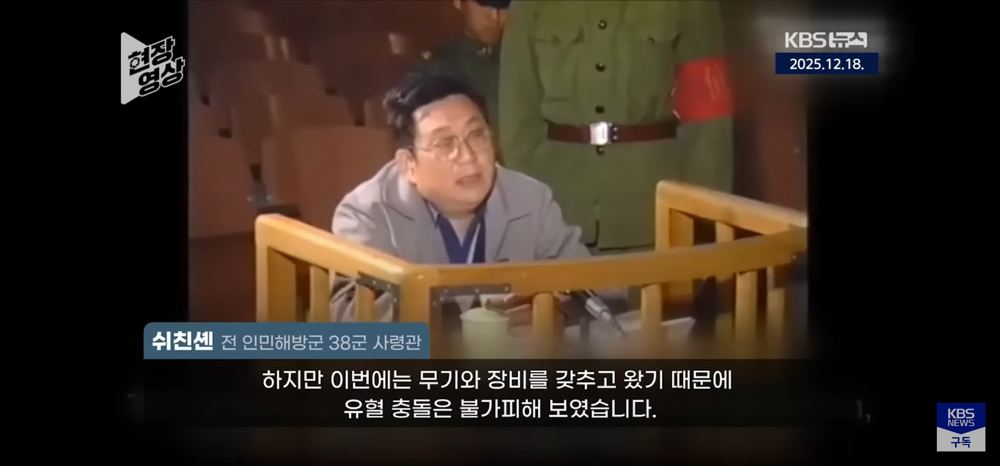
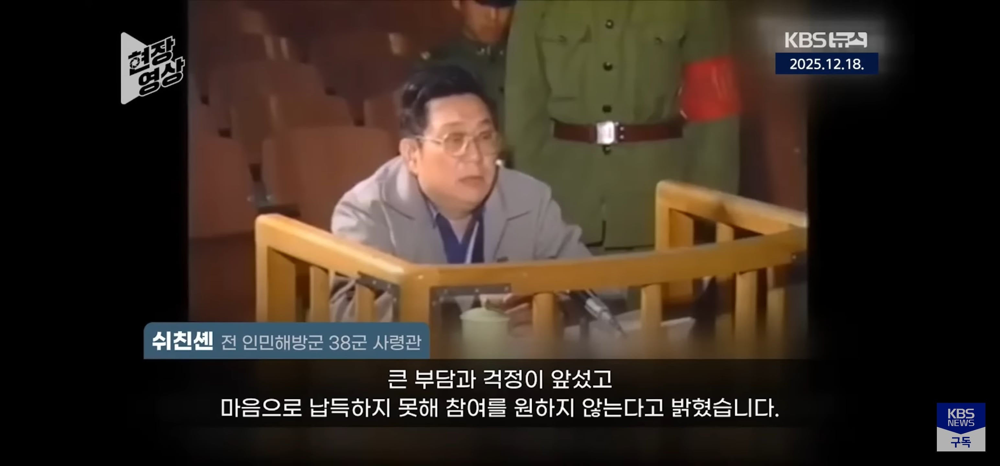
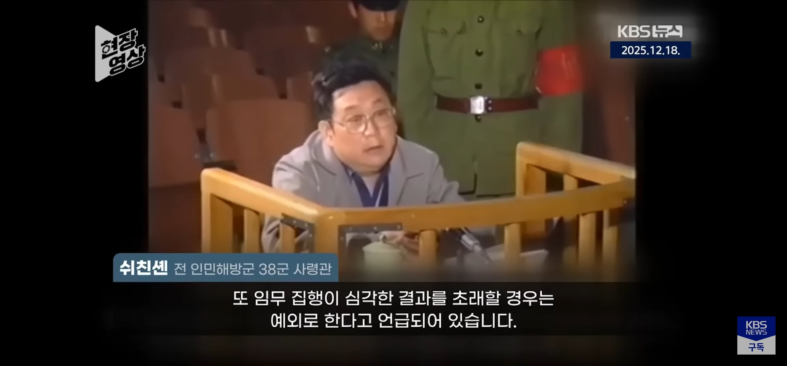
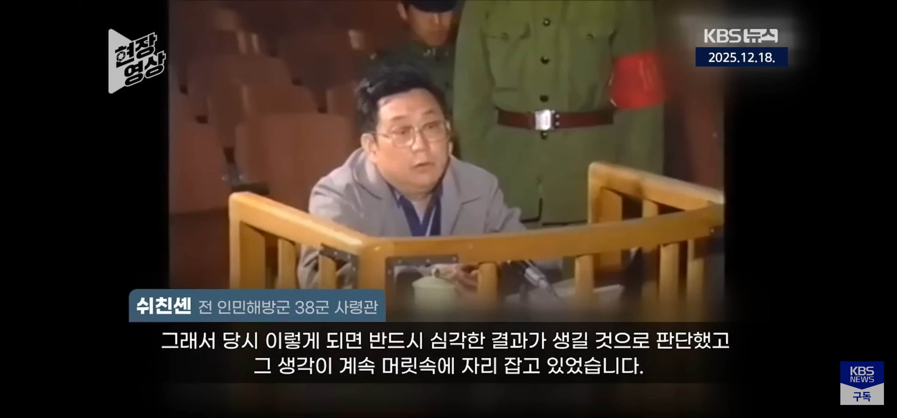
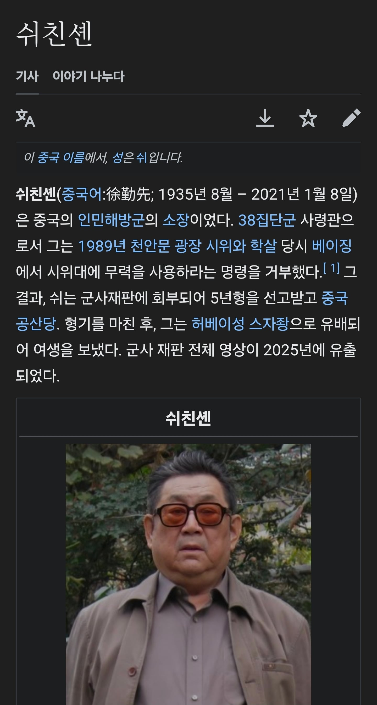

상관의 명령이라면 뭐가됐든 덮어놓고 따라야한다니
거 참 중공 빨갱이같은 논리네 그거









상관의 명령이라면 뭐가됐든 덮어놓고 따라야한다니
거 참 중공 빨갱이같은 논리네 그거
제복의 명예는 징병제 모병제의 유무나 얼마의 보수를 받느냐의 문제가 아니라 존중받을 자격을 가진 사람이냐의 문제일 뿐이다
어차피 병사출신이면 소신발언하다 총살당했다고 한줄 적히고 끝임 니가 상상하던대로 명예를 주고 뭐를 주고 그딴거없음 저사람 지휘관이라 이렇게 관심받은거지
천안문때 반대하던 군인들 이름 다 기억할꺼같음?
양심이나 명예는 남이 알아주는 가치만은 아니다
스스로에게 얼마나 자신있느냐의 문제이기도 함
안알아주면 할 이유도 없다 이순신 장군만 기억하지 이순신 배 끌던 조타수 이름을 누가기억함 그당시 기록에도 조타수 이름은 남아있지 않음
군인이 하는 전쟁은 이름이 안 남는 수많은 사람들이 자기 목숨까지 걸고서 각자의 자리에서 묵묵히 직무를 수행해서, 될지 안될지 아리까리한 그 상황을 극복하고 승리를 추구하는 행위다
굳이 전쟁 나가서 죽지않아도 월급 10만원 30만원 받던 사람들도 조국위해 자기 2년의 세월을 받친 사람들이다 이런사람들을 위해 뭘 해줬냐 생각하면 나라에대한 애국심도 사라지는걸 비판할수도 없고 강요할수도 없는거임
내가 그 월급 10만원이니 그 미만 받고 일했지만 돈을 적게받기때문에 나 자신에게도 떳떳치 못한 일에 굴복해야한다고 생각한적 없음
굴복하거나 거기에 같이 영합할수도 있어. 근데 그러면서 법까지 어겼을때 욕쳐먹고 명예를 상실하는건 감수하라는 이야기지.
니가 그렇다고 모든사람이 그래야 한다는 법은 없음 상관의 명령에 따랐다고 비난할이유도 없지
그리고 불합리를 감수하고 명예를 지킨이들을 비웃고 조롱하지 말라는거고.
그리고 법을 어겼다는건 비난받아야할 이유가 맞는데? 법은 양심, 선악, 정의같은 애매모호한게 아니라 명확히 규정된 최저선의 가이드라인 아니냐?
그리고 중공군의 경우는 모르겠지만, 국군의 경우에는 그 6.25전쟁중에도 전쟁 초반에나 잠깐 지휘관에게 즉결처분권을 줬다가 해악이 너무 심해서 전쟁중에 도로 즉결처분권이 박탈되었음
전쟁나면 장교가 병사 즉결처형한다는 발상은 6.25때도 좆같다고 엎어진거고 현대엔 당연히 그딴거 없는데 왜 이런 뜬소문이 지금도 횡횡하는지 모르겠네.
군대 안갔다와서 그럼 쟤 미필임. 군대갔다왔다는 얘긴 죽어도 안하더라
라떼 복무신조에
상관의명령에 절대 복종한다 내용있었는데 요즘꺼보니깐 내용 빠젔더라
따 진
적어도 징병제이고 불과 몇년전만해도 월급 몇십수준 받던 우리나라 병사 수준에선 해당안되는 말인듯